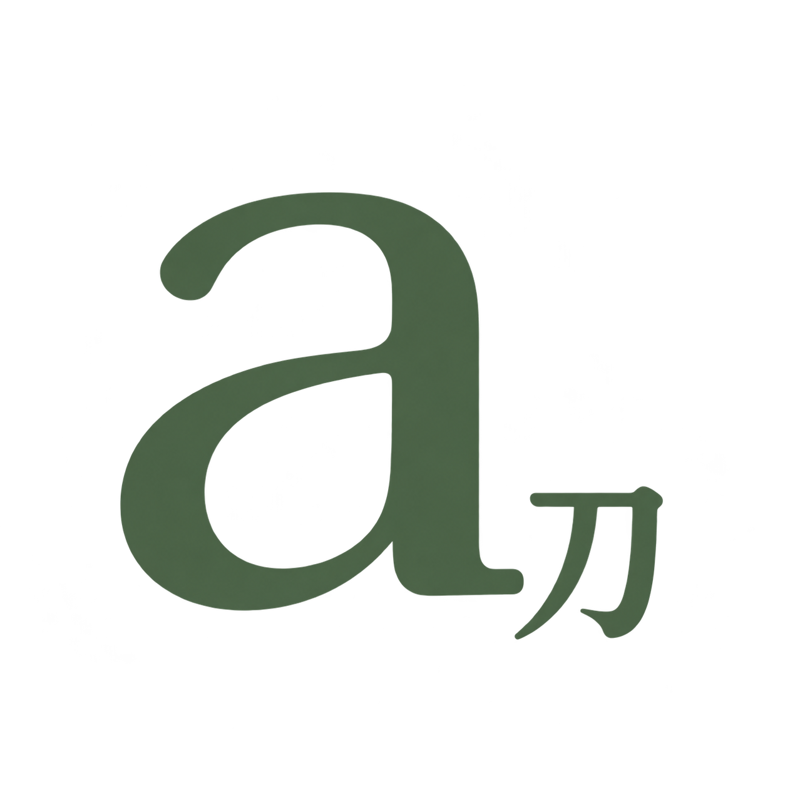
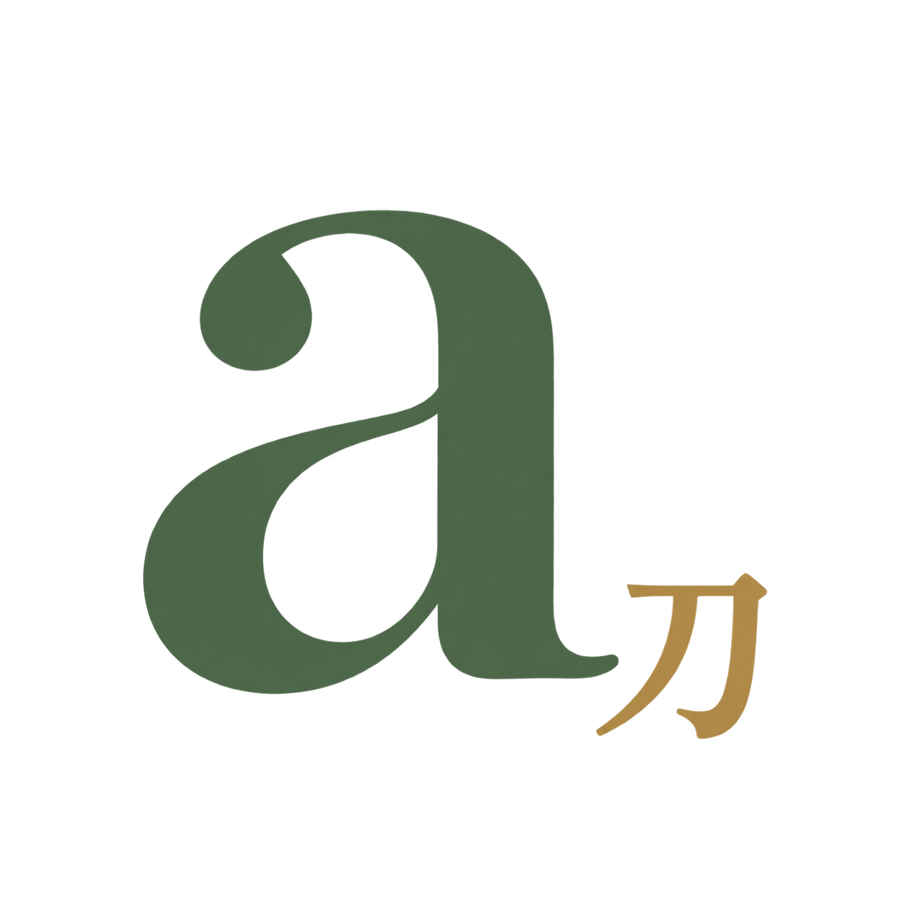
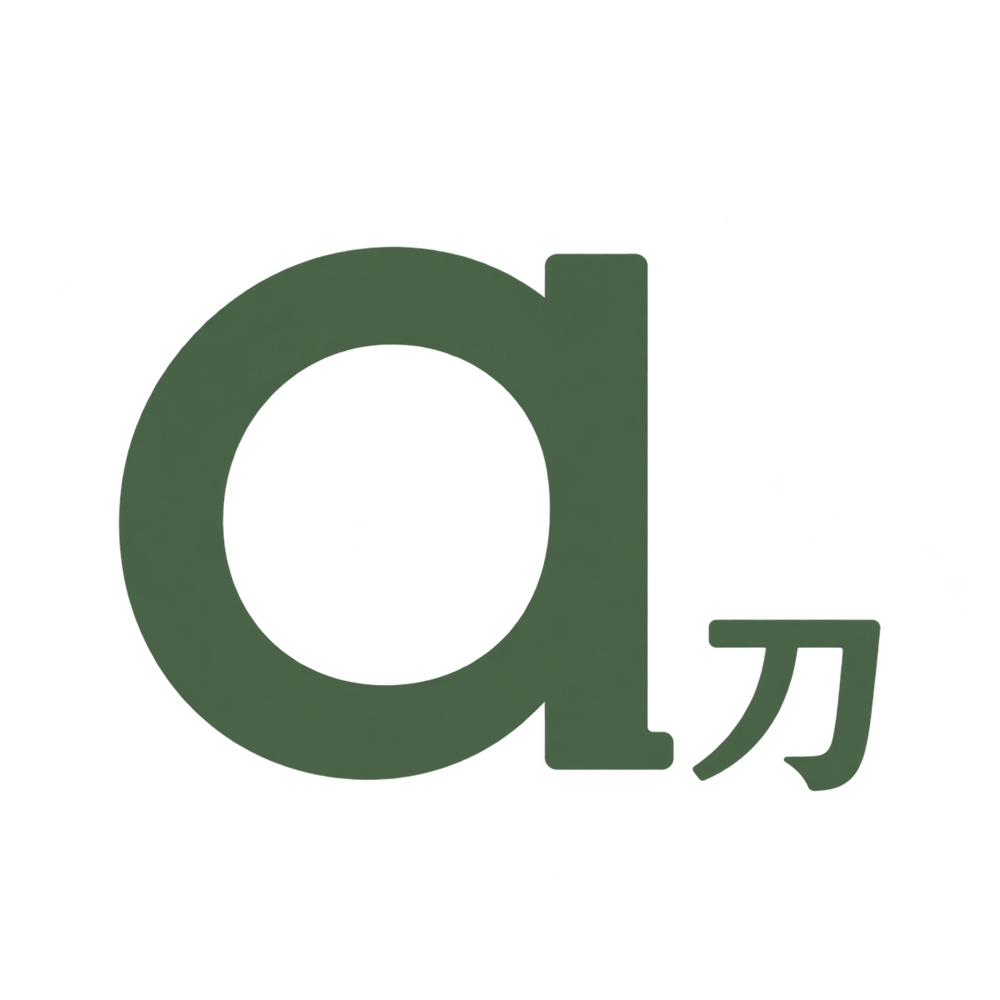
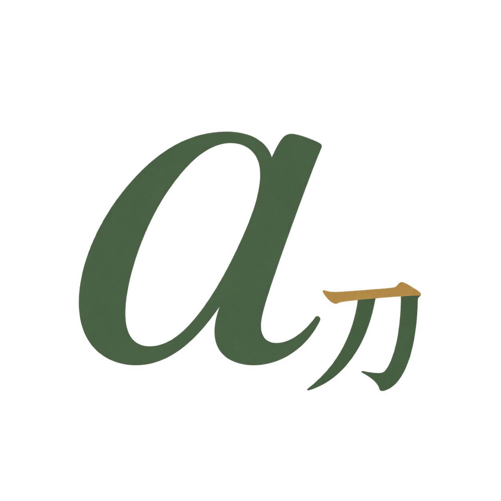
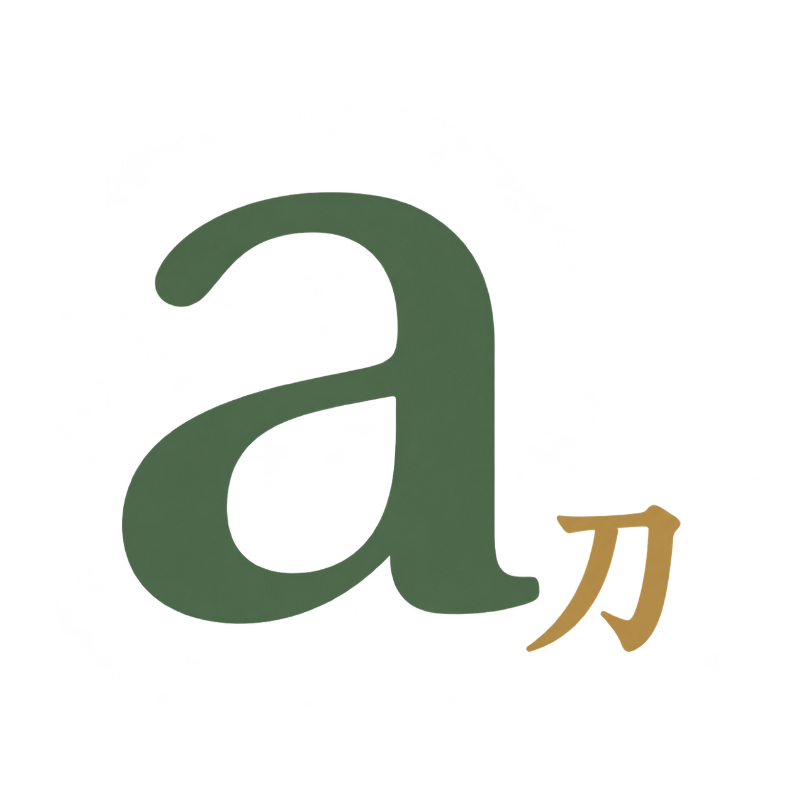
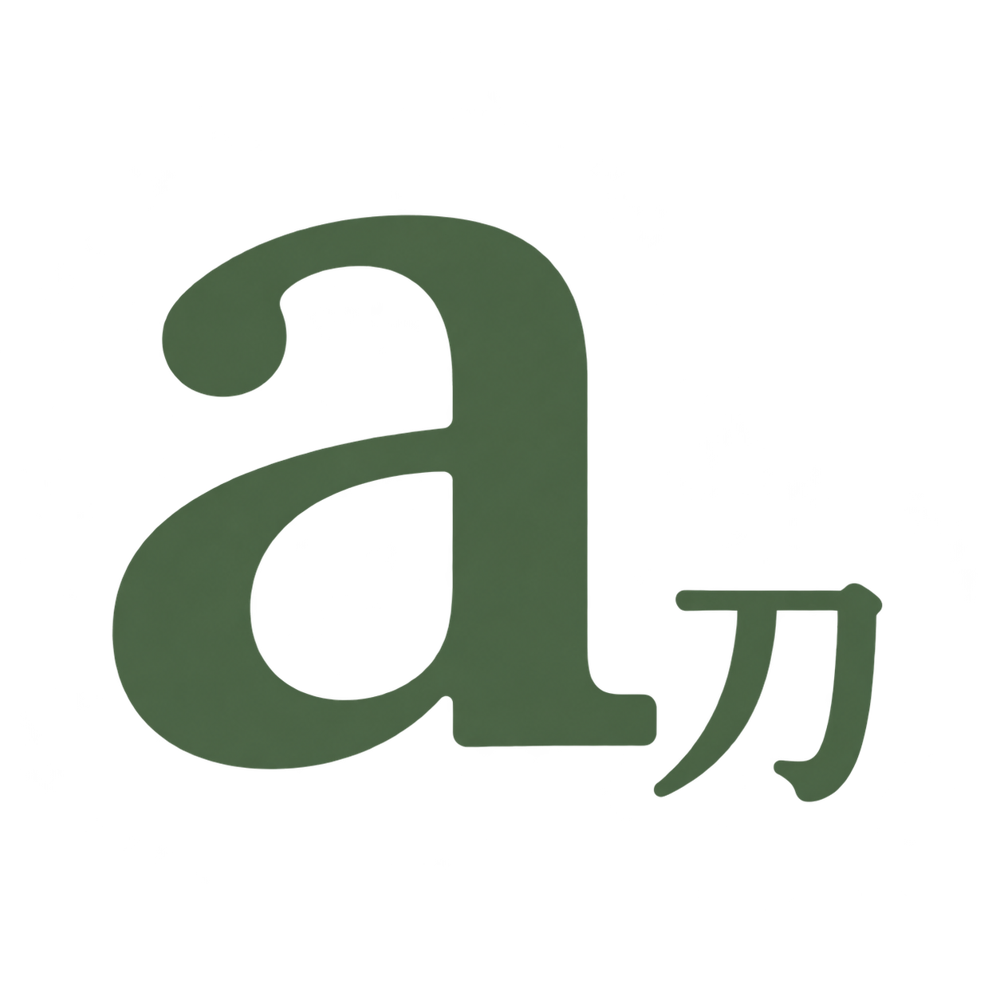

01
AINKUN / LOGO EXPLORATION
A prominent lowercase a, a smaller subscript ?, and restrained typography in the morning palette. Compare the options on cream, white, or a transparency grid.



Geometric proportions, defined terminals, and a subtle corner radius.
Download transparent PNG ↗


Compare the earlier rounded directions ?
All six files are transparent PNGs. The portfolio still uses the existing logo while you choose.